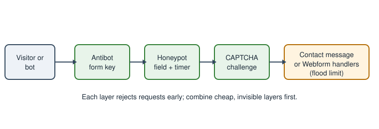

Forms for Visitors: Contact and Webform
|
This content was generated with the assistance of AI and should be verified against the official documentation before being relied on in production. |
A museum website needs ways for visitors to talk back: a "Contact us" page, a question to the curator about an object, a school-group booking request, a volunteer application. Drupal answers with two tools. The Contact module is small and ships in core up to Drupal 11; the Webform module is a large contributed module for anything that needs more than a subject and a message. This page was checked on 2026-10-30 against Drupal 11.4.x and PHP 8.3+, and covers both tools, the spam-protection modules that sit in front of them, and the personal-data obligations a form creates. The running example is the Meridian Museum site.
The audience is the site builder and administrator. Developers who need a form coded by hand should read Form API instead; editors and administrators who manage who may see submissions will also want Users, roles and permissions.
Version status at a glance
-
The core Contact module is deprecated in Drupal 11.4.0 and removed from core in Drupal 12.0.0 (scheduled for the week of 2026-12-07). The change record "The Contact module is removed" states that it can be installed as a contrib module, maintained at
drupal.org/project/contact. The contrib project has a 1.0.0 release (January 2026) for Drupal above 11.3, describes itself as a drop-in replacement, and is not covered by the security advisory policy. The same list of modules moving to contrib in 12 includes Ban, Field Layout, History, Search, Settings Tray, Shortcut, Telephone and Toolbar; see Preparing for Drupal 12 and Removed core modules and replacements. -
Webform 6.3.x (6.3.1 released in September 2026) supports Drupal 10.3+ and 11; Webform 6.2.x supports Drupal 10.2 and receives security support until Drupal 10 ends on 2026-12-09. Drupal 12 compatibility is not announced on the project page; check the release notes before upgrading. Drupal 10 must not be chosen for a new site.
-
CAPTCHA 2.0.11 and 8.x-1.18 (both October 2026) list Drupal 9.5 through 11; the project is "minimally maintained" and states that the 8.x-1.x branch is dropped after Drupal 12 support. Antibot 2.0.5 supports Drupal 8.8 through 11. Honeypot 2.2.2 supports Drupal 10.3 and 11.
The core Contact module
Contact lets visitors send e-mail without publishing an address. It provides two kinds of form:
-
Site-wide forms, at
/contact, send the message to fixed recipient addresses such as the museum’s information desk. Several forms can exist, one per category (general enquiries, press, school bookings), and/contact/{form_id}opens a specific one. -
Personal forms appear as a Contact tab on a user’s profile (
/user/{uid}/contact). They let one user write to another without learning the address. A user can switch their own form off in their account settings, and users with the Administer users permission can still reach them.
Both kinds let the sender send themselves a copy. The sender’s address stays private until the recipient replies.
Enabling and configuring
-
Enable Contact on
/admin/modules. -
Open
/admin/structure/contact(Structure, Contact forms) and choose Add contact form. -
Fill in the label, the comma-separated recipients, an optional auto-reply text, a weight and whether the form is selected by default. The auto-reply is empty by default, which means no acknowledgement is sent.
-
Grant the permissions Use the site-wide contact form (anonymous and authenticated visitors) and, if needed, Use users' personal contact forms.
-
Add a footer menu link: Structure, Menus, Footer, enable the Contact item.
-
Set the default for personal forms in Configuration, People, Account settings (
/admin/config/people/accounts), under Contact settings.
Blocks placed only on the contact page can show opening hours or a phone number next to the form, using the visibility rules described in Blocks and block layout.
Internals
A contact form is a configuration entity (contact.form.<id>) holding the label, recipients, reply text, weight and an
optional redirect path. A submitted message is a content entity of type contact_message that core does not store in
the database: the form builds the entity, runs validation, and the module’s mail handler sends it. Messages are
therefore never listed in the administration interface, and a lost message cannot be recovered. Mail goes through
Drupal’s mail system with message keys such as page_mail, page_copy and page_autoreply for site-wide forms and
user_mail and user_copy for personal ones; a site can alter them with hook_mail_alter() or replace the mail
backend.
Flood control is configured in contact.settings (a limit and a time window per user or IP). The values are not
exposed in the interface; read them with Drush and change them with the config editor:
ddev drush config:get contact.settings
ddev drush config:edit contact.settingsSource: Contact module overview
A site-wide form can be exported like any configuration. This example is a Meridian Museum enquiry form:
# config/sync/contact.form.school_booking.yml
langcode: en
status: true
id: school_booking
label: 'School booking enquiry'
recipients:
- schools@meridian-museum.example
reply: 'Thank you. The education team will answer within three working days.'
weight: 2
message: 'Tell us the school, the year group and the preferred dates.'
redirect: '/visit'Source: Contact module overview
Pitfalls and security
-
Nothing is stored. If the mail server is down the visitor sees a success message while the museum receives nothing; watch the mail log and consider Webform when records matter.
-
The auto-reply is sent to whatever address the visitor typed. An open reply text can turn the site into a spam relay, one of the open security issues listed on the contrib project page. Keep the auto-reply short and static, enforce flood limits and add spam protection (below).
-
Users can hide a personal form, but the Administer users permission bypasses that choice. Keep that permission to administrators.
-
Behind a shared proxy all visitors may appear as one IP, which makes flood limits trip for everyone; configure the trusted proxies in
settings.php(settings.php and environments). -
Contrib project docs recommend
contact_blockto show a form inside a block; verify its release for your core version. -
Mail deliverability (SPF, DKIM) is the administrator’s job; see Email and error pages.
Contact after Drupal 12
Before upgrading to 12, install the contrib module while the site is still on 11.4 (composer require 'drupal/contact:^1.0'), or plan
a replacement. Uninstalling the module before the upgrade discards its configuration, so keep it installed throughout, as
the guidance for all removed modules says:
ddev composer require 'drupal/contact:^1.0'
ddev drush config:export -y
ddev drush updatedb -ySource: Contact (contrib project)
Because the contrib project is not covered by the security advisory policy, a museum that handles sensitive messages
may choose Webform instead (next section), which has security advisory coverage. Older books such as Drupal 10
Masterclass (2023) present Contact as a permanent core feature and describe contact_block-style add-ons as optional;
since Drupal 11.4 it is deprecated and in 12 it is gone from core.
Webform for complex forms
Webform (drupal/webform) builds forms from elements, stores submissions as entities, and sends results through
handlers. Its project page lists drafts, preview, scheduling, multi-step forms, confirmations, modal dialogs, access
controls, prepopulation, e-mail notifications, remote post, a customisable results view, export and import, file
uploads, submission limits, PDF generation and automatic purging. About 380,000 sites report using it.
ddev composer require 'drupal/webform:^6.3'
ddev drush en webform webform_ui -ySource: Webform project page
Webform 6.3 declares Drupal ^10.3 || ^11.0 and moved deprecated sub-modules to a separate project. A Drupal 7 migration needs the separate Webform: Migrate module.
Building a form
Open /admin/structure/webform, choose Add webform, then build the form in the Build tab (the webform_ui module).
Each element has a machine name, a type and options. Under the hood a webform is a configuration entity
(webform.webform.<id>) whose elements are YAML, editable in the Source tab. The Meridian volunteer application:
# webform.webform.volunteer_application (elements field)
name:
'#type': textfield
'#title': 'Full name'
'#required': true
email:
'#type': email
'#title': 'E-mail address'
'#required': true
gallery:
'#type': select
'#title': 'Preferred gallery'
'#options':
planetarium: Planetarium
geology: Geology
robotics: Robotics
availability:
'#type': checkboxes
'#title': 'Availability'
'#options':
weekdays: Weekdays
weekends: Weekends
consent:
'#type': checkbox
'#title': 'I agree that the museum stores this application for six months.'
'#required': trueSource: Webform project page
Elements use the Form API render types, so #required, #default_value and #states work as in
Form API. Multi-step forms use webform_wizard_page elements.
Settings, handlers and results
-
Settings (per form): confirmation message or redirect, draft saving, preview, limits per user or total, scheduled open and close dates, access, and what is stored. Disabling "Disable saving of submissions" is the recommended default for forms that only e-mail.
-
Handlers run on submission. The Email handler sends configured mail, Remote post posts to a URL, and developers can write plugins. A handler failure can block or only log, depending on its setting; slow SMTP relays delay the visitor’s response unless mail is sent asynchronously.
-
Results at
/admin/structure/webform/manage/<id>/results: a table and CSV export. Submissions are content entities with their own access control. -
Access per form: who may create, view any or own submissions, edit or delete them. Grant view any webform submission sparingly.
Webform also integrates with Honeypot and CAPTCHA, offers the Webform Node and Webform Block ways to place a form
(node, block or the /webform/<id> route), and has many contrib add-ons.
When to use which
| Need | Contact | Webform |
|---|---|---|
One message to a fixed address |
Yes |
Yes, with an Email handler |
Stored, searchable submissions |
No |
Yes |
Several fields, files, steps |
No |
Yes |
Visitor writes to a user |
Personal form |
Not designed for it |
Security advisory coverage |
In core until 11.x; contrib in 12 is not covered |
Covered |
Maintenance effort |
Very low |
Moderate, many settings |
Spam protection
Public forms are targets. Layer cheap, invisible defences first and add a visible challenge only if needed.

and enough time spent?} H -- no --> R2[Rejected] H -- yes --> C{CAPTCHA solved?} C -- no --> R3[Rejected] C -- yes --> M[Handlers send mail or store]
Honeypot
Honeypot 2.2.2 combines a hidden field that humans leave empty and a time check that rejects forms submitted faster
than a person could. It is configured at /admin/config/content/honeypot and can protect user registration, password
reset, Webform, Contact, node and comment forms, or all forms. It is less intrusive than a CAPTCHA, which the project
says punishes the user. Developers add protection in code:
\Drupal::service('honeypot')->addFormProtection($form, $form_state, ['honeypot', 'time_restriction']);Source: Honeypot project page
Honeypot upgrades to 2.2.2 are only supported from 2.1.4. The \Drupal:: call is acceptable in a
hook_form_alter() implementation; in a service, inject honeypot instead.
Antibot
Antibot (2.0.5) lists form IDs (wildcards allowed) at /admin/config/user-interface/antibot. Each protected form’s
action becomes /antibot until JavaScript sees a human gesture (mouse move, Enter, Tab or swipe) and restores it with a
per-form key; posts without the key fail. No per-form value is rendered, so page caching remains safe. Without
JavaScript the form is hidden behind a message. The project page has no accessibility section, so test with a screen
reader and a keyboard before using it on forms with an accessibility obligation, and prefer a different layer if
users without JavaScript must reach the form.
CAPTCHA
CAPTCHA 2.0.x adds a challenge to chosen forms at /admin/config/people/captcha. The core project supplies an image
challenge; other challenges (ALTCHA, Cloudflare Turnstile, hCaptcha, Friendly Captcha and others) come from add-on
modules. Image CAPTCHAs reduce accessibility and conversion; challenge-free services trade that for a third-party data
flow that must appear in the privacy notice. Keys for those services belong in environment variables or the Key
module, never in exported configuration:
// settings.php: inject the key at runtime, never commit it.
$config['captcha.settings']['site_key'] = getenv('MERIDIAN_CAPTCHA_SITE_KEY') ?: 'CHANGE_ME';Source: CAPTCHA project page
The exact configuration key depends on the challenge module; check its documentation. The AntiSpam, Spam and Honeypot projects are suggested alternatives on the CAPTCHA project page.
GDPR considerations
A contact or booking form collects personal data (name, e-mail, a free-text message that may contain anything). Drupal does not make a site compliant; the controller must. Practical points:
-
Lawful basis and notice: state who is collecting data, why, for how long, and whom it is shared with next to the submit button, and link the privacy policy. Use a required, unticked consent checkbox only when consent is the basis.
-
Minimise: ask only for fields you need. Do not store submissions of forms that only e-mail; Webform lets you disable saving.
-
Retention: Webform can purge old submissions automatically (a purge setting with a number of days in the form settings, run on cron; see Cron, queues and maintenance). The standalone Webform Purge project is unsupported because Webform includes the feature. A form without a purge setting keeps submissions indefinitely.
-
Access: limit view and delete permissions, and note that locking a submission stops editing but not deletion.
-
Subject rights: be able to find, export and delete one person’s submissions. Webform’s results table filters by e-mail and exports CSV. Mail copies in mailboxes and backups are also in scope.
-
Transfers and processors: a hosted CAPTCHA, SMTP provider or CRM post is a processor and needs a data-processing agreement and a mention in the notice.
-
Logs: avoid writing form contents to watchdog or e-mail subject lines.
-
Cookies: Honeypot and Antibot set no tracking cookies; third-party challenges may, which affects consent banners.
This section describes engineering practice and is not legal advice.
Common errors
-
Mail never arrives: the default PHP mail transport is unreliable; use an SMTP module and set the site mail address.
-
The form is cached for anonymous users and shows stale tokens: a form with a CSRF token must be rendered with the correct cache contexts; Antibot and Honeypot are designed for this, custom form alters may not be.
-
Contact tab missing: the user’s personal form is disabled, the recipient has no e-mail, or the visitor lacks the permission.
-
Webform submissions disappear after an import: configuration import replaces form definitions, but submissions are content and are not exported.
-
Spam persists after Honeypot: bots that execute JavaScript and wait pass the timer; add Antibot or a CAPTCHA.